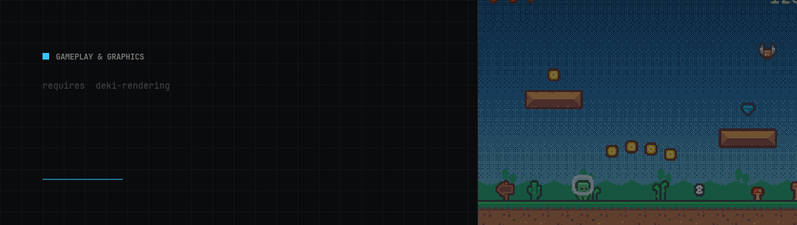

- Generated by
 1.18.0
1.18.0
|
deki-3d 0.40.0
Deki package reference
|

Software-rasterised 3D as a render pass: meshes, a perspective camera and .obj import, sharing one framebuffer with 2D
Repository: github.com/dekiengine/deki-3d · Latest release: 0.40.0 · Needs engine 0.40.0+ · Requires: deki-rendering
Install with DekiEditor --packages-add deki-3d <project>, or from the Package Manager. The engine's own components and C++ API are in the Deki docs.
Shown in the editor as 3D.
| Component | Category | Description |
|---|---|---|
| Mesh3DSettings | 3D | How the 3D pass draws: renderer, tiles, texture and vertex switches, threads. |
| MeshComponent | 3D | Draws a 3D mesh. The object's transform places it, and the scene camera must be Perspective to see it. |
Parts you can leave out of a build. A feature with a define is switched there; the rest are stripped with their components.
| Feature | Define | Default |
|---|---|---|
| Software rasteriser | DEKI_FEATURE_3D_SOFTWARE | on |
How the 3D pass draws: renderer, tiles, texture and vertex switches, threads.
Inspector name: Mesh3D Settings · Category: 3D · Type: Deki3D::Mesh3DSettings
| Property | Type | Default | Constraints | Description |
|---|---|---|---|---|
| renderer | enum | "Auto" | Auto, Software, GPU | What draws the meshes. Auto uses the GPU where the platform has OpenGL and the software rasteriser everywhere else. Software is the exact picture a board without a GPU shows, so choose it to preview one in the editor; GPU is far faster where there is one. |
| composeOnGpu | bool | true | GPU only: build the frame on the GPU where the display presents through it, drawing the meshes straight into it between layers of 2D instead of reading them back. Much faster on a handheld. Turn it off if something later in the frame reads the whole picture back from the frame buffer (a full-screen effect pass); with it on, that buffer holds only the 2D drawn after the meshes. | |
| tiles | enum | "Platform" | Platform, Fixed | Software only: where the tile size comes from. Platform uses each platform's own (its DEKI_3D_TILE_SIZE define, or 32): 32 on a microcontroller, whose depth buffer must fit its internal RAM, 64 on a Miyoo Mini, 128 in the editor. Fixed uses Tile Size everywhere. The picture is the same at any size; only the speed changes. |
| tileSize | int32 | 32 | 8 to 512; shown when tiles allows | Tile edge in pixels, on every platform. Software only. The depth buffer is one tile, so 32 costs 2 KB and suits a microcontroller, while a desktop can afford 128 or more. |
| perspectiveCorrect | bool | true | Correct texture perspective. Turning it off gives the warping of PlayStation-era hardware, and saves about a tenth of the fill cost. | |
| vertexSnap | bool | false | Round projected vertices to whole pixels, for the jitter of fixed-point era hardware. | |
| fillThreads | int32 | 1 | 1 to 16 | Software only: how many threads draw on a device or desktop build: they fill the screen's tiles, and share out the geometry of each part of a mesh of a few hundred triangles or more. 1 starts no threads at all, 2 suits a dual-core board, and above the core count it stops helping. The editor always previews with one thread, since it loads packages as unloadable DLLs; the picture is identical either way. |
Draws a 3D mesh. The object's transform places it, and the scene camera must be Perspective to see it.
Inspector name: Mesh Component · Category: 3D · Type: Deki3D::MeshComponent
| Property | Type | Default | Constraints | Description |
|---|---|---|---|---|
| mesh | AssetRef (Mesh) | "" | A compiled mesh asset. Assign an imported model here; leave it empty to draw the primitive below instead. | |
| primitive | enum | "Cube" | Cube, Quad, Pyramid | Which built-in shape to draw while no mesh asset is assigned. |
| tintColor | Color | "#FFFFFFFF" | Multiplies the mesh's own colours. White leaves them alone. | |
| shading | enum | "VertexLit" | Unlit, VertexLit, Flat | Unlit is flat colour. Vertex lit shades each triangle by the scene's lights, from the normals of its corners. Flat shades each triangle from its own face, which is the faceted look. A scene without a Light draws every mesh unlit. |
| doubleSided | bool | false | Draw the inside of the mesh as well as the outside. Costs roughly double the fill. | |
| castShadows | bool | true | Casts shadows from the lights that cast them (Light's Cast Shadows), where the display draws through OpenGL. | |
| shader | AssetRef (Shader) | "" | An HLSL .shader that draws this mesh on the GPU. Its Shade() gets what the shading model above would draw and returns the colour; a Displace() moves the vertices. A build for a board without a GPU stops while a scene it ships uses one. | |
| shaderParams | Vector3 | [0.0, 0.0, 0.0] | Three numbers the shader reads as uParams: speeds, strengths, whatever it says it wants. | |
| shaderColor | Color | "#FFFFFFFF" | A colour the shader reads as uColor. |
Inherits sortingOrder, ignoreClip, pixelSnap, alphaMode from RendererComponent.
Earlier releases: CHANGELOG.md.
Generated from the package's reflection data (engine 0.40.0). Property names are the keys used in scene files. Renames keep an alias (compatibility).